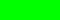

INSTRUCTION
- First, you should aim the position you want, by typing or commanding in maximum 360 degrees/units.
- Second, measure the position you want to move by typing "forward", "backward", "left", or "right".
For example, to move forward 100 units, please type FORWARD 100. This applies for the degree of RIGHT or LEFT. For further example, go to help.txt
- Play the game until you reach the 
and stay away from
Click an animal below to start!